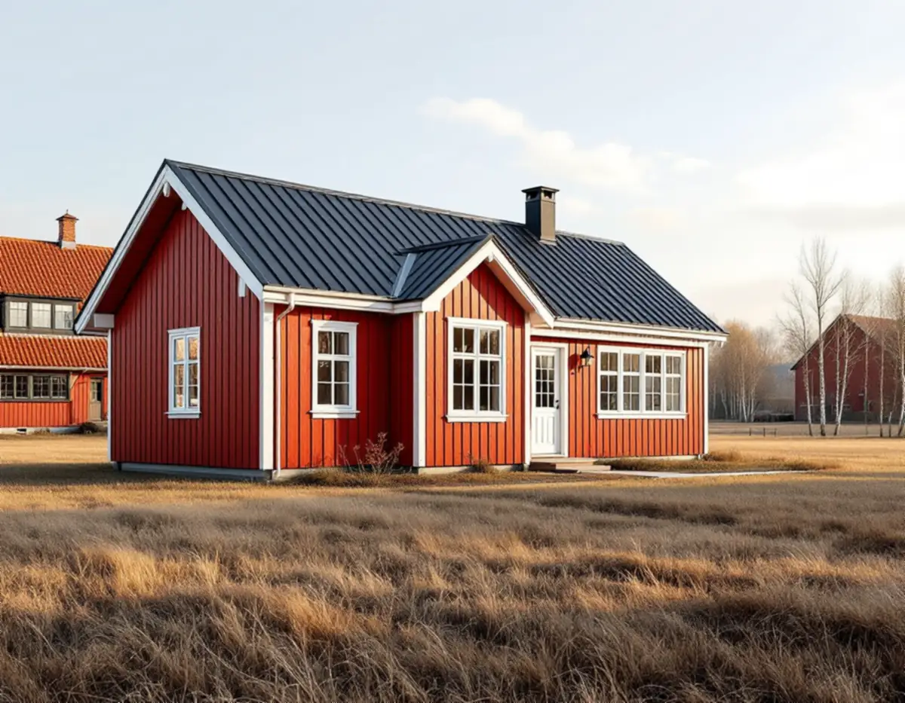
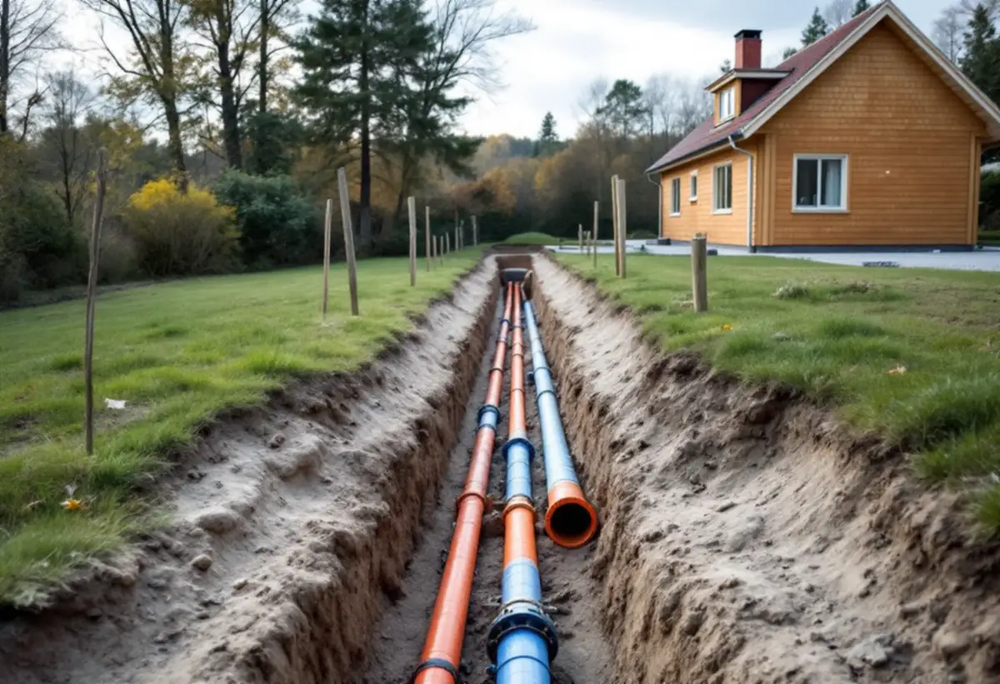
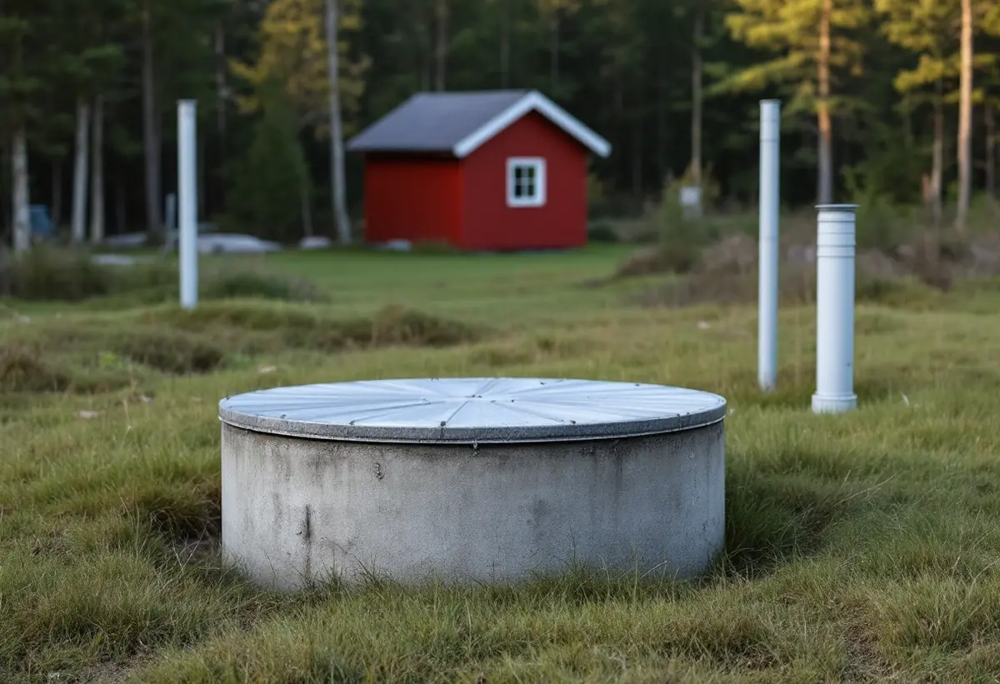

Platsbesök
Detaljplan, befintliga byggnader och hur vatten och avlopp löses i dag.
I Vallentuna kan tomten ligga i en villagata i tätorten eller på landet med egen brunn och eget avlopp. Det avgör både hur stort huset får bli och hur vattnet ska lösas. Geal Entreprenad AB bygger komplementbostadshus nyckelfärdigt och reder ut båda frågorna innan ritningarna görs.

Plan- och bygglagen ger olika mått beroende på var tomten ligger. Inom detaljplan får ett lovfritt komplementbostadshus vara högst 30,0 kvadratmeter och 4,0 meter till nocken, och alla lovfria komplementbyggnader på tomten får tillsammans vara högst 45,0 kvadratmeter. Utanför detaljplan är gränserna 50,0 kvadratmeter, 4,5 meter och 65,0 kvadratmeter. I båda fallen ska huset ligga inom tomten och vara mindre än huset det kompletterar.
Vallentuna kommun skriver att bygglov krävs om fastigheten ligger inom ett kulturhistoriskt särskilt värdefullt område. Kommunen påminner också om att lovfriheten inte tar bort kravet på anmälan och startbesked när vatten och avlopp installeras i byggnaden eller inom tomten, eller när huset får ventilation.

Kommunen räknar gäststugan som en komplementbyggnad, liksom garage, förråd, vedbod och bastu. En lovfri komplementbyggnad kan inte användas som självständig bostad, skriver kommunen, eftersom den då inte längre är bara ett komplement till bostadshuset. Ska någon bo i huset är det ett komplementbostadshus, och då ska det uppfylla de tekniska kraven för en bostad.
Skillnaden märks i allt från planlösning till isolering och installationer. Därför bestämmer vi användningen tillsammans med dig först. Kommunens krav på handlingar är tydliga: ritningar i skala 1:100, situationsplan i 1:500 med norrpil, mått i millimeter, kulörer med NCS-koder och en planritning som är möblerad så att tillgängligheten kan granskas.
Roslagsvatten AB ansvarar för vatten och avlopp i Vallentuna. Innan nytt VA installeras ska en anmälan göras till kommunens bygglovsenhet, och startbeskedet gäller även grävarbetet för ledningarna. Anmälan ska ha en VA-situationsplan där ledningar och brunnar ritas från förbindelsepunkten fram till byggnaden, och en kontrollplan. Efter startbeskedet anmäls arbetet till Roslagsvatten, som synar installationen, medger anslutning och sätter upp vattenmätare. Därefter söks slutbesked.
Enligt Roslagsvatten ska vattenledningen till ett komplementhus kopplas efter vattenmätaren i det befintliga huset och spillvattnet på befintlig spillvattenledning inom tomten, gärna via en rensbrunn. Dag- och dräneringsvatten får inte kopplas till spillvattnet. Har huset kök eller pentry och toalett räknas det som en egen bostad i VA-taxan.
I Vallentuna finns ungefär 2 800 enskilda avloppsanläggningar. Den som anlägger en ny eller ändrar en befintlig anläggning ska först söka tillstånd eller göra en anmälan till Bygg- och miljötillsynsnämnden, annars kan det bli en miljösanktionsavgift. Situationsplanen ska visa vilka hus som kopplas på, varje del av anläggningen, platsen för slamtömningsbilen, egen och grannarnas dricksvattentäkt med avstånd i meter och eventuella borrhål för bergvärme. För en infiltration krävs också en jordprovsanalys.
För en egen brunn till husbehov behövs i de flesta fall inget tillstånd. Kommunen hänvisar till SGU:s Normbrunn 16 och till Livsmedelsverkets råd att ta prov minst vart tredje år, och minst en gång per år om fler än två fastigheter delar brunn. Innan en ny brunn borras ska du ta reda på var grannarnas avlopp finns och berätta det för brunnsborraren. Om villan och tomten beskrivs under takrenovering i Vallentuna och byggföretag i Vallentuna. Lagens mått finns samlade i reglerna för attefallshus.

Detaljplan, befintliga byggnader och hur vatten och avlopp löses i dag.
Gäststuga eller bostad – det styr kraven på huset.
Plan med möblering, fasader, situationsplan och VA-ritning.
VA och ventilation anmäls och vi väntar på startbesked.
Grund, stomme, tak och installationer fram till nyckelfärdigt.
Efter Roslagsvattens syn eller avloppsbeslutet söks slutbesked.
Skatteverket räknar upp arbeten som inte ger rotavdrag på ett småhus, bland annat att bygga ett helt nytt hus, en friggebod, ett garage eller en liknande fristående byggnad, och att skriva bygglovshandlingar eller anlita en arkitekt. Ett komplementbostadshus är en ny fristående byggnad, så kostnadsförslaget räknas utan avdrag.
Husets storlek och planlösning, kök och badrum, grunden, avståndet till förbindelsepunkten eller om ett eget avlopp behöver byggas eller utökas. Efter ett gratis platsbesök får du ett skriftligt kostnadsförslag.
Komplementbostadshus på tomten.
Attefallshus →Takbyte, takbesiktning och plåtarbeten.
Takläggare i Vallentuna →Villaområden och gårdar.
Takrenovering i Vallentuna →Nytt våtrum, Roslagsvatten och egen brunn.
Badrumsrenovering i Vallentuna →Ritningar, grannar och kommunens mark.
Byggföretag i Vallentuna →Villor och grupphus från 1970-talet och framåt.
Fasadmålning i Vallentuna →Fritidshus, stationssamhällen och villor i Vallentuna.
Fasadrenovering i Vallentuna →Flygbuller, glasval och lov i Vallentuna.
Fönsterbyte i Vallentuna →Fönster i tegelvillan, fog och bågar.
Fönsterrenovering i Vallentuna →Golv på platta och golvvärme i villan.
Golvläggare i Vallentuna →Slipa och laga gamla golvplank.
Golvslipning i Vallentuna →Utbyggda kök, villor och gårdar.
Köksrenovering i Vallentuna →Gårdar, fritidshus och villor i Vallentuna.
Målare i Vallentuna →Rännor, plåttak och uthus i Vallentuna.
Plåtslagare i Vallentuna →Uthus, uterum och fritidshus.
Snickare i Vallentuna →Lovfrågan, skorstenen och arkivet.
Takbyte i Vallentuna →Spännpapp och papperstapet.
Tapetsering i Vallentuna →Ritningar, nivåer och arkivet.
Tillbyggnad i Vallentuna →Radon när huset byggs om.
Totalrenovering i Vallentuna →